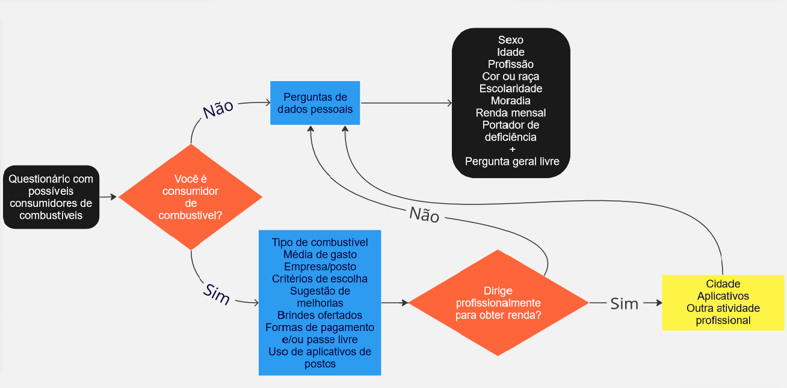

Planejamento
Pesquisa realizada com possíveis consumidores de combustíveis, com questões quantitativas e qualitativas para conhecer um pouco mais os clientes dos postos e traçar o perfil desses clientes. Total de respostas: 69.
Fluxograma da pesquisa
